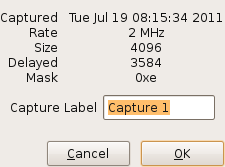

Right-clicking on a display-page tab will pop up a dialog to change the descriptive text on that tab. If the tabbed page has a sample, some sample parameters will be included. 
Right-clicking in the area for one of the channel traces will pop up a dialog to change the legend text for that trace.
As the mouse moves across the channel traces, the sample number and sample time are updated in the Status Bar, in the leftmost box, describing the sample that the mouse pointer is pointing at.